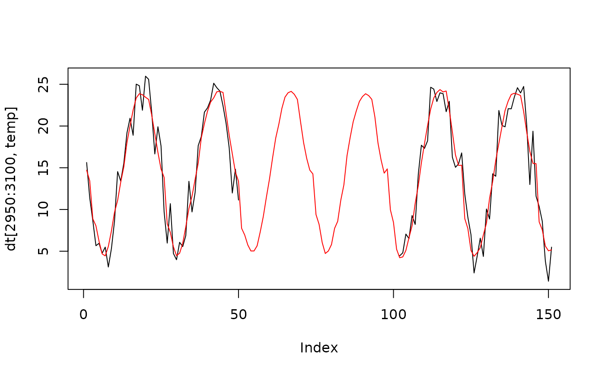

Fill Imputation
impute_fill.RdImputes a new vector of variables which can be used to fill NA values.
Examples
dt <- weather
rolling_window <- length(dt[is.na(temp),temp])*2
dt[,indx := .I]
#> Index: <station>
#> times temp rh rain ws wd wd_sd lon
#> <POSc> <num> <num> <num> <num> <num> <num> <num>
#> 1: 2020-04-13 01:00:00 11.710215 NaN 0.2 1.9 303 0.000000e+00 135.86
#> 2: 2020-04-13 02:00:00 8.591594 NaN 0.0 1.0 38 0.000000e+00 135.86
#> 3: 2020-04-13 03:00:00 5.029886 NaN 0.0 3.5 15 0.000000e+00 135.86
#> 4: 2020-04-13 04:00:00 7.329537 NaN 0.0 0.4 194 8.537737e-07 135.86
#> 5: 2020-04-13 05:00:00 4.867557 NaN 0.4 1.9 276 0.000000e+00 135.86
#> ---
#> 8782: 2020-10-12 21:00:00 14.505099 NaN 0.0 1.6 189 0.000000e+00 135.73
#> 8783: 2020-10-12 22:00:00 16.143942 NaN 0.0 1.2 163 0.000000e+00 135.73
#> 8784: 2020-10-12 23:00:00 10.410922 NaN 0.0 3.4 137 0.000000e+00 135.73
#> 8785: 2020-10-13 00:00:00 7.722190 NaN 0.0 3.3 117 0.000000e+00 135.73
#> 8786: 2020-10-13 01:00:00 5.800267 NaN 0.0 3.6 112 0.000000e+00 135.73
#> lat station YYYY MM DD hh mm indx
#> <num> <char> <num> <num> <int> <int> <num> <int>
#> 1: -33.26 naddacs 2020 4 13 1 0 1
#> 2: -33.26 naddacs 2020 4 13 2 0 2
#> 3: -33.26 naddacs 2020 4 13 3 0 3
#> 4: -33.26 naddacs 2020 4 13 4 0 4
#> 5: -33.26 naddacs 2020 4 13 5 0 5
#> ---
#> 8782: -33.13 scaddan 2020 10 12 21 0 8782
#> 8783: -33.13 scaddan 2020 10 12 22 0 8783
#> 8784: -33.13 scaddan 2020 10 12 23 0 8784
#> 8785: -33.13 scaddan 2020 10 13 0 0 8785
#> 8786: -33.13 scaddan 2020 10 13 1 0 8786
dt[, tm_imp := round(data.table::frollapply(
indx,
n = rolling_window,
fill = NA_real_,
FUN = impute_fill,
FUN_n = rolling_window,
times = times,
var = temp,
align = "center"
),3)]
#> Index: <station>
#> times temp rh rain ws wd wd_sd lon
#> <POSc> <num> <num> <num> <num> <num> <num> <num>
#> 1: 2020-04-13 01:00:00 11.710215 NaN 0.2 1.9 303 0.000000e+00 135.86
#> 2: 2020-04-13 02:00:00 8.591594 NaN 0.0 1.0 38 0.000000e+00 135.86
#> 3: 2020-04-13 03:00:00 5.029886 NaN 0.0 3.5 15 0.000000e+00 135.86
#> 4: 2020-04-13 04:00:00 7.329537 NaN 0.0 0.4 194 8.537737e-07 135.86
#> 5: 2020-04-13 05:00:00 4.867557 NaN 0.4 1.9 276 0.000000e+00 135.86
#> ---
#> 8782: 2020-10-12 21:00:00 14.505099 NaN 0.0 1.6 189 0.000000e+00 135.73
#> 8783: 2020-10-12 22:00:00 16.143942 NaN 0.0 1.2 163 0.000000e+00 135.73
#> 8784: 2020-10-12 23:00:00 10.410922 NaN 0.0 3.4 137 0.000000e+00 135.73
#> 8785: 2020-10-13 00:00:00 7.722190 NaN 0.0 3.3 117 0.000000e+00 135.73
#> 8786: 2020-10-13 01:00:00 5.800267 NaN 0.0 3.6 112 0.000000e+00 135.73
#> lat station YYYY MM DD hh mm indx tm_imp
#> <num> <char> <num> <num> <int> <int> <num> <int> <num>
#> 1: -33.26 naddacs 2020 4 13 1 0 1 NA
#> 2: -33.26 naddacs 2020 4 13 2 0 2 NA
#> 3: -33.26 naddacs 2020 4 13 3 0 3 NA
#> 4: -33.26 naddacs 2020 4 13 4 0 4 NA
#> 5: -33.26 naddacs 2020 4 13 5 0 5 NA
#> ---
#> 8782: -33.13 scaddan 2020 10 12 21 0 8782 NA
#> 8783: -33.13 scaddan 2020 10 12 22 0 8783 NA
#> 8784: -33.13 scaddan 2020 10 12 23 0 8784 NA
#> 8785: -33.13 scaddan 2020 10 13 0 0 8785 NA
#> 8786: -33.13 scaddan 2020 10 13 1 0 8786 NA
plot(dt[2950:3100, temp], type = "l")
lines(dt[2950:3100, tm_imp], type = "l", col = "red")
